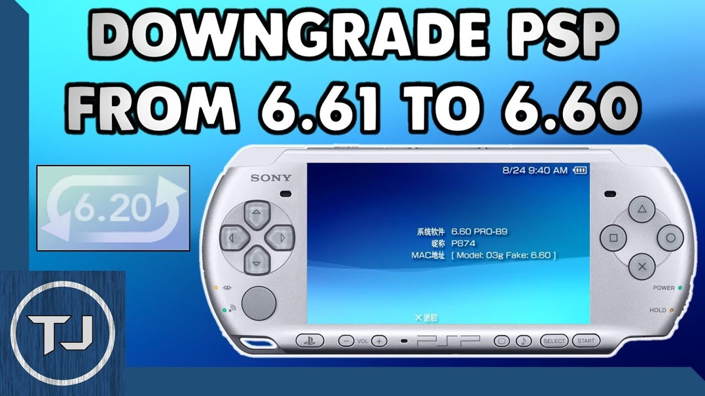
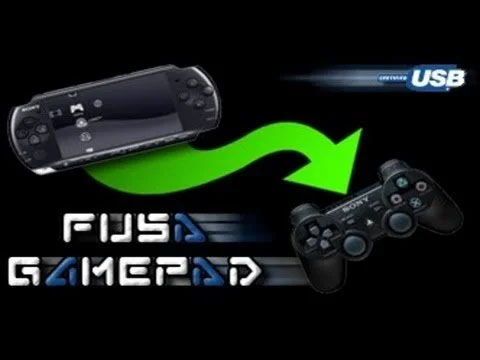
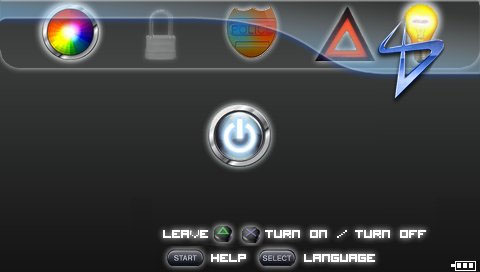
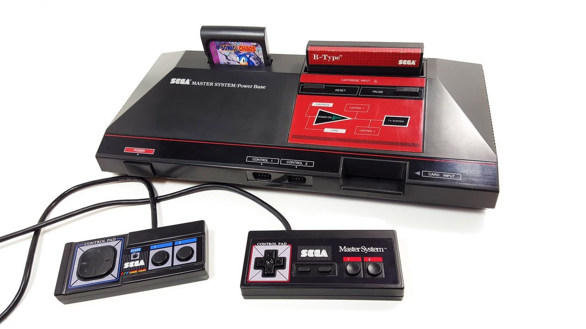

Información de PSP
Algunos de los aplicaciones o ayuda que mostramos a continuación son más que nada para ayudar con algunas necesidades que se presenten.
Nos puede recomendar algunos programas o aplicaciones para subir a nuestra WEB o si encuentra algún problema con algunos links o comandos le agradecemos informar para mantener esta página activa. igual todos los comandos y los link fueron actualizados el 31-05-2022.
Actualizaciones de la consola PSP/GO y HACK
Update Official
OFW (Official Firmware) Es seguro que esta será la última actualización de PSP, tanto para los modelos de PSP normales como para la PSP Go, es la última y definitiva. Por tanto, es muy recomendable actualizar en ambos casos a esta última versión para garantizar la compatibilidad con los juegos. Ruta para el archivo:/PSP/GAME/UPDATE/
Custom Firmware
Cuando instalas un Custom Firmware en tu PSP, las posibilidades de la consola se amplían exponencialmente: vas a poder usar todo tipo de emuladores, aplicaciones homebrew (programas y juegos) e incluso jugar con juegos de PSP o PlayStation 1.
- FastRecovery: Este Custom Firmware tiene casi todas las características de uno normal, nos permitirá ejecutar Copias de Seguridad (ISOs) desde el XMB, tendremos un VSH Menu para ver o modificar algunas configuraciones del sistema y mucho mas.
- PROUPDATE: Este Custom Firmware tiene casi todas las características de uno normal, nos permitirá ejecutar Copias de Seguridad (ISOs) desde el XMB. Cuando crasheas o apagas completamente la PSP, el Custom Firmware desaparecerá.
INFINITY
Infinity es una herramienta que permite a los usuarios habilitar un firmware personalizado persistente en su PlayStation Portable. Al ser compatible con todos los modelos en los firmwares 6.60 y 6.61, un usuario puede instalar infinity y disfrutar del firmware personalizado PRO o ME sin tener que volver a habilitarlo después de cada reinicio.
Guia Definitiva para Hack Permanente
 1. Con esta guía podemos tener nuestra consola PSP con el HACK permanente sin la necesidad de cuando uno la encienda volver a cargar el HACK nuevamente al inicio. Para esto seguiremos los siguientes pasos con los siguientes archivos en nuestra consola (PROUPDATE - INFINITY 2).
1. Con esta guía podemos tener nuestra consola PSP con el HACK permanente sin la necesidad de cuando uno la encienda volver a cargar el HACK nuevamente al inicio. Para esto seguiremos los siguientes pasos con los siguientes archivos en nuestra consola (PROUPDATE - INFINITY 2).
- Ejecutar Aplicación PROUPDATE
- Le damos a la
Xdespués del proceso le damos de nuevo a laX - Ejecutamos INFINITY 2
- Le damos a la
Xcomo nos indica la aplicación y finalizamos con laXpara el Reinicio de la consola - Volvemos a ejecutar PROUPDATE
- Le damos a la después del proceso le damos de nuevo a la
X - Por última vez ejecutamos INFINITY 2
- nos vamos hacia la
izquierday seleccionamosPRO CFW by Coldbirdcon laXPara terminar, le damos al botónHOMEde la consola y a laXpara reiniciar - Y estaría listo, desde el momento de iniciar la consola tendremos el hack activado para verificar solo de damos al botón
selecty saldrá un menú de CFW de la consola.
Hombrew - Extenciones
Agenda Digital
 PSP-PDA, desconocida por algunos y admirada por otros, añade funciones de agenda digital a nuestra PSP. Incluye un kit de aplicaciones compuesto por Alarma, Administrador de archivos, Calendario, Calculadora, Reproductor de musica, Libreta de direcciones, Visor de imagenes y Bloc de notas.
PSP-PDA, desconocida por algunos y admirada por otros, añade funciones de agenda digital a nuestra PSP. Incluye un kit de aplicaciones compuesto por Alarma, Administrador de archivos, Calendario, Calculadora, Reproductor de musica, Libreta de direcciones, Visor de imagenes y Bloc de notas.

Alarma PSP
 PSPALARM! es un homebrew desarrollado por CoD3r-D que hará que nuestra PSP se convierta en un efectivo despertador. Permite poner la PSP en modo suspensión pulsando start y cuando la alarma esté puesta la PSP se encenderá.
PSPALARM! es un homebrew desarrollado por CoD3r-D que hará que nuestra PSP se convierta en un efectivo despertador. Permite poner la PSP en modo suspensión pulsando start y cuando la alarma esté puesta la PSP se encenderá.
PSP con OSB
 Plugin (p.o.c) de video UVC de PS Vita portado a PSP por @Xerpi. Este es un complemento que te permite transmitir la pantalla de tu PSP a tu computadora a través de USB. Sigue el estándar USB Video Class (UVC), por lo que debería funcionar en cualquier sistema operativo. El plugin usa la CPU para hacer la conversión de formato, Puedes utilizar una aplicación de video para ver la pantalla de la PSP en tu ordenador o utilizar OBS.
Plugin (p.o.c) de video UVC de PS Vita portado a PSP por @Xerpi. Este es un complemento que te permite transmitir la pantalla de tu PSP a tu computadora a través de USB. Sigue el estándar USB Video Class (UVC), por lo que debería funcionar en cualquier sistema operativo. El plugin usa la CPU para hacer la conversión de formato, Puedes utilizar una aplicación de video para ver la pantalla de la PSP en tu ordenador o utilizar OBS.
Chronoswitch
Impresionante Homebrew que nos permitirá bajar nuestras PSP de casi cualquier versión 6.XX a 6.20 (o menor, si tu PSP lo soporta), ya sea para reparar pequeños errores de la Flash0 o simplemente por curiosidad. Recordamos que hacer un downgrade es sumamente arriesgado, debemos seguir las instrucciones al pie de la letra o podemos dejar nuestra PSP completamente inservible.
CIPL Flasher
 INSTALACION DE CFW EN PSP ADVERTENCIA,NO INSTALAR CFW PERMANENTE EN CONSOLAS CON PLACA MALDITA. El CFW 6.61 Pro-C2 se puede hacer permanente solamente en modelos PSP 1000 (PSP FAT) o PSP 2000 (PSP Slim) que no tengan lo que en su día se llamó “placa maldita”, o lo que es lo mismo, una placa TA-088v3. Esto quiere decir que los modelos PSP 2000 TA-088v3, PSP 3000, PSP Go y E1000 no pueden hacer permanente este Custom Firmware. Y todas las placas TA-079v1, TA-079v2, TA-081, TA-082, TA-085v1/v2, TA-086 y TA-088v1/v2 permiten hacer este CFW permanente.
INSTALACION DE CFW EN PSP ADVERTENCIA,NO INSTALAR CFW PERMANENTE EN CONSOLAS CON PLACA MALDITA. El CFW 6.61 Pro-C2 se puede hacer permanente solamente en modelos PSP 1000 (PSP FAT) o PSP 2000 (PSP Slim) que no tengan lo que en su día se llamó “placa maldita”, o lo que es lo mismo, una placa TA-088v3. Esto quiere decir que los modelos PSP 2000 TA-088v3, PSP 3000, PSP Go y E1000 no pueden hacer permanente este Custom Firmware. Y todas las placas TA-079v1, TA-079v2, TA-081, TA-082, TA-085v1/v2, TA-086 y TA-088v1/v2 permiten hacer este CFW permanente.
FuSa GAMEPAD
Tengo el placer de presentaros una funcion mas de vuestra PSP que os dejara con la boca abierta: usa tu PSP como PAD para tus juegos del PC y juegos de PS3, via USB. Desde hace varios años podemos usar el WiFiController, para usar la PSP como PAD para el PC inalambrico. Pero muchos queriamos usar la PSP como mando via USB, sin complicaciones y con un ahorro maximo de bateria. Desde hoy, ese sueño es posible.
Linterna
PSPLight es una curiosa aplicación que nos puede ayudar en más de una ocasión, convertirá nuestra PSP en una linterna para cuando sea que la necesitemos, puede que no sea tan útil como una linterna real, pero sin duda nos puede llegar a ser útil en más de alguna vez, además cuenta con varios tipos de luces y efectos y por si fuera poco, también trae un reparador de píxeles.
LIVE TV
 PSP Live TV es una aplicación para PSP cuyo desarrollo fue iniciado en su dia por j13dj y que posteriormente continuó nickxab, cuyo objetivo es que podamos ver la televisión via streaming desde nuestra PSP siempre y cuando dispongamos de una conexión wifi..
PSP Live TV es una aplicación para PSP cuyo desarrollo fue iniciado en su dia por j13dj y que posteriormente continuó nickxab, cuyo objetivo es que podamos ver la televisión via streaming desde nuestra PSP siempre y cuando dispongamos de una conexión wifi..
Navegador Html
Seguro sabes del Navegador que lanzo Google, Google Chrome, ahora finalmente llega para nuestras portatiles, es un navegador dentro de un portal, funciona en cualquier PSP, con CF o sin CF, de facil uso que te permite guardar favoritos, abrir pestañas, escuchar musica mientras navegas y varias herramientas utiles.
NitePr
¿Eres de los que le gusta hacer trucos en los juegos? ¿A veces no te funciona el CWcheat? Pues este plugg-in te gustara. Gracias a Sanik, que nos trae un magnifico plug-in llamado nitePR. Esta versión es compatible con la PSP Slim versión 3.90 M33-3. Con este plug-in puedes añadir trucos o quitarlos..
Radio
 Popular y practico programa, que nos permitira escuchar la radio de internet desde nuestra PSP, a través de la conexion WIFI. La principal mejora es el selector de Skins. Incluye emisoras en español, recopiladas por BETA.
Popular y practico programa, que nos permitira escuchar la radio de internet desde nuestra PSP, a través de la conexion WIFI. La principal mejora es el selector de Skins. Incluye emisoras en español, recopiladas por BETA.
Textos
 Al presionar Seleccionar, aparece el menú, lo que le permite marcar, buscar, cargar y guardar archivos. Los activadores R y L se utilizan para avanzar y retroceder una página. Cuando necesite ingresar una entrada, presione Cuadrado y el ingenioso teclado virtual le permitirá ingresar.
Al presionar Seleccionar, aparece el menú, lo que le permite marcar, buscar, cargar y guardar archivos. Los activadores R y L se utilizan para avanzar y retroceder una página. Cuando necesite ingresar una entrada, presione Cuadrado y el ingenioso teclado virtual le permitirá ingresar.
Ubuntu
Ubuntu 7.10 homebrew de jack118218 para PSP. El desarrollador ha anunciado que esta aplicación shell se ha actualizado a la versión 1.0, saliendo oficialmente de la fase beta. Esta versión también vendrá con una gran cantidad de cambios y mejoras.
Windows 7 PSP
 Nuevo Windows 7, donde disponemos de varias aplicaciones para realizar tareas distintas. En esta primera versión BETA contamos con un Navegador de Internet (Firefox), Cliente MSN (Live Messenger) y un sencillo pero divertido Paint. El autor promete muchas mejoras.
Nuevo Windows 7, donde disponemos de varias aplicaciones para realizar tareas distintas. En esta primera versión BETA contamos con un Navegador de Internet (Firefox), Cliente MSN (Live Messenger) y un sencillo pero divertido Paint. El autor promete muchas mejoras.
Emuladores y Retro
Atari 2600
La Atari 2600 es una videoconsola lanzada al mercado en 1977 bajo el nombre de Atari VCS, convirtiéndose en el primer sistema de videojuegos en tener gran éxito, e hizo popular los cartuchos intercambiables.

DosBox
 DOSBox es un emulador que recrea un entorno similar al sistema MS-DOS con el objetivo de poder ejecutar programas y videojuegos originalmente escritos para dicho sistema en computadoras más modernas o en diferentes arquitecturas.
DOSBox es un emulador que recrea un entorno similar al sistema MS-DOS con el objetivo de poder ejecutar programas y videojuegos originalmente escritos para dicho sistema en computadoras más modernas o en diferentes arquitecturas.
Game Boy - Game Boy Color
 La Game Boy Color, abreviada GBC, es una videoconsola portátil de la quinta generación de la familia de sistemas de videojuegos de Nintendo Game Boy. Una particularidad de esta consola es ser la primera compatible con su antecesora, así que los antiguos juegos de la Game Boy clásica pueden correr en esta nueva Game Boy e incluirles color de un modo similar al Super Game Boy.
La Game Boy Color, abreviada GBC, es una videoconsola portátil de la quinta generación de la familia de sistemas de videojuegos de Nintendo Game Boy. Una particularidad de esta consola es ser la primera compatible con su antecesora, así que los antiguos juegos de la Game Boy clásica pueden correr en esta nueva Game Boy e incluirles color de un modo similar al Super Game Boy.
MAME FBA
 MAME, Multiple Arcade Machine Emulator, es un emulador arcade gratuito y de código abierto diseñado para ser capaz de emular la mayoría de las máquinas arcade que podíamos encontrar en bares y salas de juego hace ya varios años.
MAME, Multiple Arcade Machine Emulator, es un emulador arcade gratuito y de código abierto diseñado para ser capaz de emular la mayoría de las máquinas arcade que podíamos encontrar en bares y salas de juego hace ya varios años.
MegaDrive
 Mega Drive, conocida en diversos territorios de América como Genesis, es una clásica videoconsola de sobremesa de 16 bits desarrollada por Sega Enterprises, Ltd. Mega Drive fue la tercera consola de Sega y la sucesora de Master System.
Mega Drive, conocida en diversos territorios de América como Genesis, es una clásica videoconsola de sobremesa de 16 bits desarrollada por Sega Enterprises, Ltd. Mega Drive fue la tercera consola de Sega y la sucesora de Master System.
RETROARCH
 RetroArch es un multi-emulador que combina varios cores de emuladores desarrollados por otros programadores y que fueron portados a la librería conocida como libretro que utiliza RetroArch.
RetroArch es un multi-emulador que combina varios cores de emuladores desarrollados por otros programadores y que fueron portados a la librería conocida como libretro que utiliza RetroArch.
Sega Master System y Game Gear
Es la tercera consola portátil con pantalla en color de la historia, después de la Atari Lynx y la Turbo Express. El proyecto comenzó en 1989 bajo el nombre de "Project Mercury" y fue lanzada en Japón el 6 de octubre de 1990.
Super Nintendo
 La Super Nintendo Entertainment System, conocida popularmente como la Super Nintendo, también llamada la Super Famicom en Japón7 (abreviada SFC) y la Hyundai Super Comboy en Corea del Sur,8 también nombrada oficialmente de forma abreviada como la Super NES o SNES en América9 y como la Super Nintendo en Europa.
La Super Nintendo Entertainment System, conocida popularmente como la Super Nintendo, también llamada la Super Famicom en Japón7 (abreviada SFC) y la Hyundai Super Comboy en Corea del Sur,8 también nombrada oficialmente de forma abreviada como la Super NES o SNES en América9 y como la Super Nintendo en Europa.
Nintendo 64
 Nintendo 64 es la cuarta videoconsola de sobremesa producida por Nintendo, desarrollada para suceder a la Super Nintendo. Fue la primera consola concebida para dar el salto del 2D al 3D. Compitió en el mercado de la quinta generación con Saturn de Sega y PlayStation de Sony
Nintendo 64 es la cuarta videoconsola de sobremesa producida por Nintendo, desarrollada para suceder a la Super Nintendo. Fue la primera consola concebida para dar el salto del 2D al 3D. Compitió en el mercado de la quinta generación con Saturn de Sega y PlayStation de Sony
Extras
Picture
Algunas imágenes de fonde de pantalla para darle algún estilo nuevo a nuestra consola. wallpaper de todos los estilos descargar el archivo y descomprimir en el directorio de raíz de la memoria de la consola. Nos quedaría de la siguiente forma ?:\PICTURE
Temas
 Esta es una recopilación de temas en formato ctf para el plugin Custom XMB, estos y los temas en formato ptf son los únicos que no tocan la flash de la PSP, por lo tanto no hay ningún riesgo de brick.
Esta es una recopilación de temas en formato ctf para el plugin Custom XMB, estos y los temas en formato ptf son los únicos que no tocan la flash de la PSP, por lo tanto no hay ningún riesgo de brick.
- estraemos el archivo en la raiz del la memoria
- si el archivo vsh se encuentra copiaremos el la ruta dentro del archivo
- En la consola le damos a select y le damos a
- comfirmanos que estan activados los 2 que seria:
- si estan en Enabled
- despues de reinicia nos vamos a
- Ajustes de temas/Temas
- y nos apareceran los temas,escogemos el que nos guste y listo
ms0:/seplugins/cxmb/cxmb.prx 1
recovery menu/Plugins
cxmb.prx [VSH] y uvc.prx [VSH]
reinicia la VSH